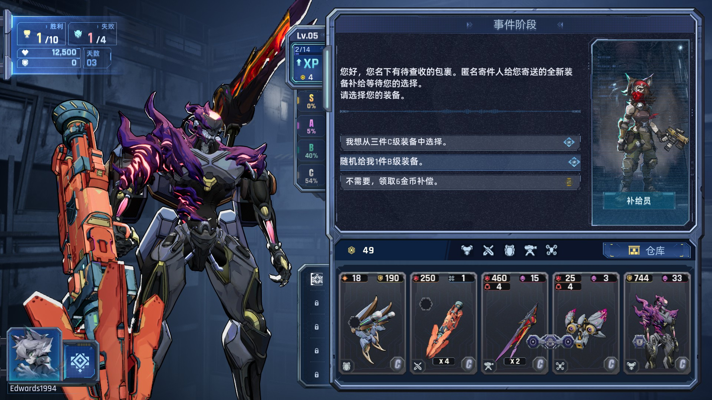
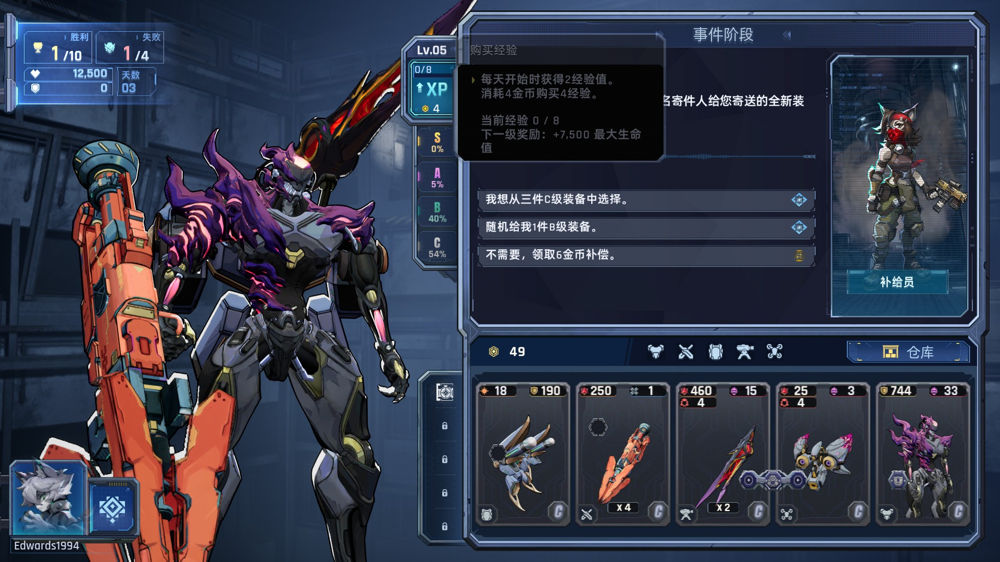
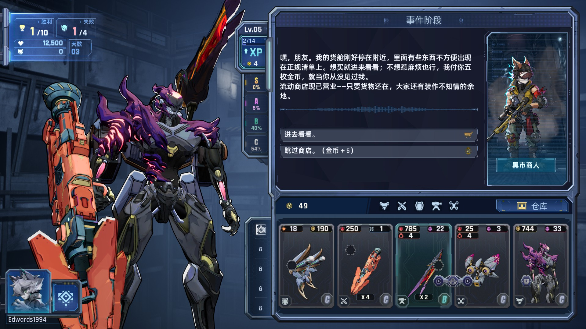

BUG-002 · 显示异常，出现一次，触发条件待复测。Windows Steam Demo，2026-11-15。第 3 天，Lv.05、1 胜 1 负、49 金币，装备与补给事件一致。
16:36 离开第 2 天结算时，补给页显示 2/14。18:26 再接管游戏时，游戏窗口 ID 已变，面板和购买经验的悬停说明均显示 0/8。中间的窗口操作未经观察。领取免费同名肩武后仍为 0/8；点「离开」进入黑市事件，显示自行恢复为 2/14，全程没有购买经验。
预期同等级、同进度的两个界面显示相同经验。影响是可能误判升级成本。未观察到经验实际丢失。回归时可在同一事件记录读数，重新进入，再对照推进一个事件前后的面板及悬停读数。


